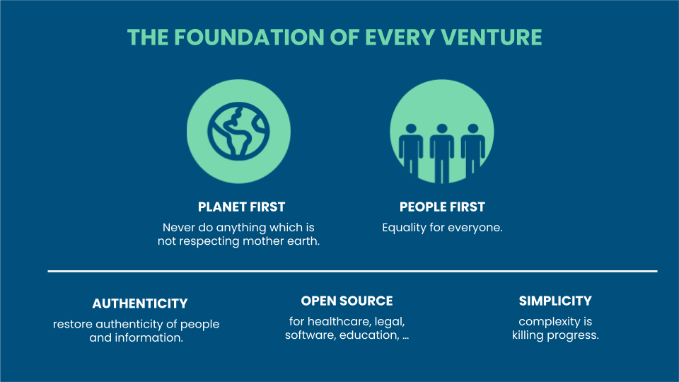

OurWorld Venture Creator
We love building companies: our previous Venture Creator was based in Belgium and was focused on creating meaningful technology for the Internet and Cloud. Some of the technologies created are still used today as products inside large companies like Verizon, Symantec and Western Digital.
OurWorld Venture Creator believes doing well and doing good go together. We are focused on creating technology which helps regenerate the planet and helps raise consciousness. We believe a new type of Internet needs to be created which provides equal chances for everyone and battles corruption while providing new opportunities.
OurWorld Venture Creator legal structure is in Mauritius, but we operate from Luxembourg, Belgium, Dubai, Egypt, Tanzania, Mauritius, and Brazil. We are grateful that our community, founders and investors have invested more than 50m USD (including $30m as community funding for the ThreeFold Internet System). We are looking for value added and value-aligned investors.
Experience
Our team is behind some of the world’s most advanced Internet storage and cloud automation technologies. We have realized +600m $USD in exits with less than 60m $USD in funding.

Our Goals
- To build a robust, decentralized, and sovereign Internet and communication infrastructure that is co-owned by everyone. This includes AI infrastructure, telecom, storage, compute and more.…
- To establish, together with partners, a sovereign, secure, decentralized digital financial ecosystem that provides safe and affordable micropayments, exchanges, and digital currency systems.
- To empower individuals and communities with the digital tools and capabilities they need to achieve a sustainable and secure digital economy through e-commerce, e-education, e-health …
- To build an Earth Regenerator that provides energy and soil regeneration capabilities capable of decarbonizing the planet as well as helping to reverse desertification (phase 2).
- Build new ways to produce Healthy Food and Clean Water (phase 2).
Our Core Values

- Planet First
- The health of our planet cannot be ignored
- Every action we do as a group needs to have the best interests for our planet
- People First
- Every action needs to be in the best interest of our citizens
- Safety, equality, education, health, privacy and sovereignty are all human right \